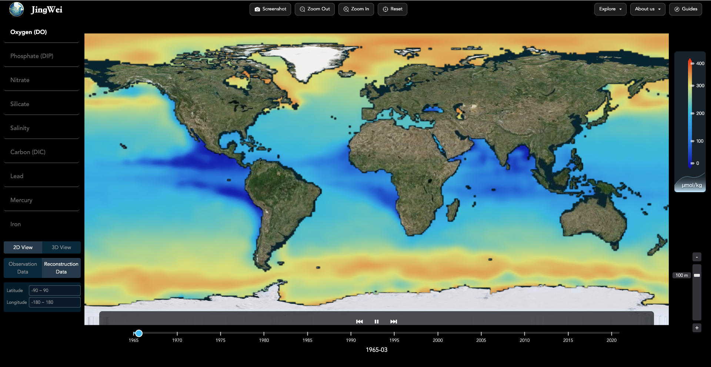
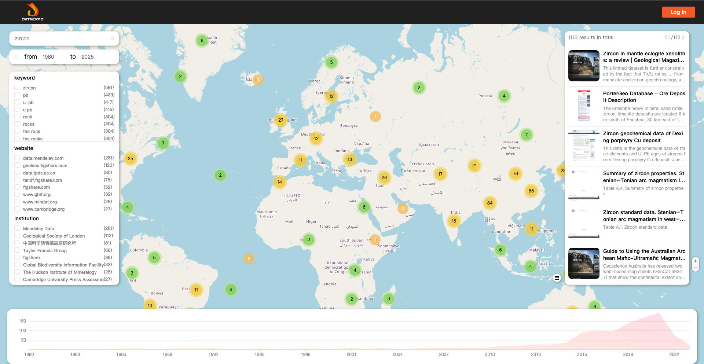
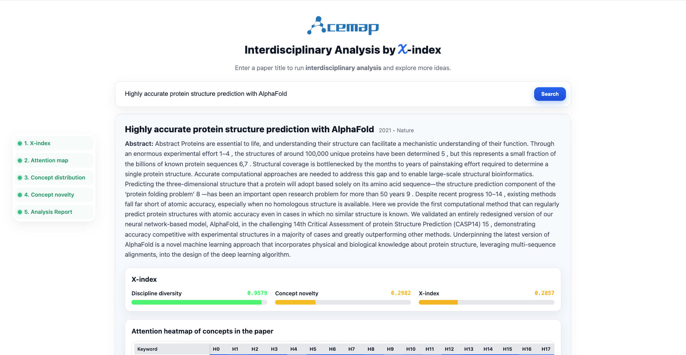

OceanVerse: Evaluable 4D Ocean Element Reconstruction Dataset under Realistic Sparsity
KDD 2026
Profile
I am currently a postdoctoral researcher in the Data Intelligence Research Center at Shanghai Jiao Tong University. I received my Ph.D. degree from the Department of Electronic Engineering, Shanghai Jiao Tong University in March 2025, supervised by Prof. Xiaoying Gan and Prof. Xinbing Wang. I received my bachelor's degree from Shanghai Jiao Tong University with honors in July 2020.
Together with Prof. Meng Jin, I lead the AI for Science group, where we explore machine learning methods for scientific discovery, including Earth system modeling and data-driven understanding of large-scale academic graphs. My research focuses on discovering heterogeneous structures and underlying knowledge from ubiquitous scientific data using advanced machine learning techniques.
Prospective Ph.D. and Master’s students interested in joining our group are warmly encouraged to contact me. We also welcome SJTU undergraduates and visiting students throughout the year.
Research Interests
AI for Ocean Science
Designing Earth system AI models for multi-sphere coupling to reconstruct sparse ocean element observations under climate change.
Scientific Agents
Tool-augmented agents for scientific data discovery, integration, visualization, and analysis.
Graph Mining
Understanding and reasoning over graph structures with large language models, with applications in large-scale scholarly network analysis.
Ocean Deoxygenation
Advancing AI-driven understanding of ocean deoxygenation mechanisms and their climatic and ecological impacts.
Selected Publications
Hybrid Graph Learning Reconstructs Global Ocean Oxygen Spatiotemporal Changes
KDD 2026
From Surface to Depth: Diagnosing Ocean Vertical Velocity with 3D Frequency Operator
KDD 2026
Projects

Jingwei
AI-driven global ocean element reconstruction platformJingwei is an interdisciplinary platform for reconstructing long-term, global spatiotemporal variations of dissolved oxygen and other ocean elements from sparse observations. Built on a hybrid deep learning framework, it provides accurate reconstructions of ocean deoxygenation and supports mechanistic understanding of climate-driven ocean change. The name Jingwei comes from a mythical bird in Chinese mythology that persistently fills the sea with pebbles and twigs, echoing our effort to fill the gaps in sparse ocean observations with AI. The platform offers interactive data visualization, resource sharing, and continuous updates toward more ocean biogeochemical variables.

DDE DataExpo
Large-scale geoscience data discovery under the Deep-time Digital Earth programDDE DataExpo is a data discovery and integration system developed under the Deep-time Digital Earth (DDE) Program, the first big science program initiated by the International Union of Geological Sciences. As a key component of the DDE data infrastructure, DataExpo aims to discover, organize, and integrate global geological and Earth science data resources. The system has crawled and indexed more than one million websites using large-scale geoscience keywords and has identified over 200,000 geological data resources, providing a foundation for open, reusable, and knowledge-driven Earth science research.

X-index
Interdisciplinary research literature analysis on AcemapX-index is a research literature analysis tool developed on the Acemap platform to evaluate the academic value of papers from an interdisciplinary perspective. The system maps research outcomes onto disciplinary coordinate systems and quantitatively measures disciplinary diversity and conceptual novelty. It supports dynamic charts for tracking long-term concept evolution, identifies patterns such as tool-driven research, and provides concept heatmaps and data matrices for tracing cross-disciplinary innovation within large-scale literature collections.
Honors & Grants
Awards
- 2025Baidu Fellowship (10 awardees worldwide).
- 2024National Scholarship, The Ministry of Education of China (国家奖学金).
- 2022Wen-Tsun Wu AI Honorary Doctoral Scholarship, AI Institute of SJTU (吴文俊人工智能荣誉博士资助).
- 2022National Scholarship, The Ministry of Education of China (国家奖学金).
- 2021National Scholarship, The Ministry of Education of China (国家奖学金).
- 2021Outstanding Teaching Assistant Award, Center for Teaching and Learning Development of SJTU.
- 2020Shanghai Honor Graduates (上海市优秀毕业生), SJTU.
- 2020ACM SIGIR Student Travel Grant for CIKM, ACM SIGIR.
- 2019Excellent Intern, Intel Asia-Pacific Research & Development Ltd.
Grants
- 2024Basic Research Project for PhD Students, National Natural Science Foundation of China（首届国家自然科学基金博士生项目）, Principal Investigator.
- 2024首届中国科协青年人才托举工程博士生专项计划（托举学会：中国电子学会）.
Professional Activities
Conference PC Member/Reviewer
-
NeurIPS (2023-2026), KDD (2025-2026), ICML (2025-2026), ICLR (2025), IJCAI (2025), SIGIR (2025), ACM MM (2025)
Journal Reviewer
- Ocean Sciencenpj Climate and Atmospheric Science; Geophysical Research Letters (GRL); Earth System Science Data (ESSD).
- Computer ScienceIEEE TKDE; IEEE TITS; ACM TKDD; IEEE TBD; IEEE TCYB; IEEE TNSE; Information Fusion; China Communications.
Teaching
- EE234 Communication Theory, Teaching Assistant, 2020–2022.
- ES342 RF Microelectronics, Teaching Assistant, 2021–2022.
- ICE2604 Introduction to Engineering for Electronic Information, Teaching Assistant, 2022–2023.
Contact
Room 437, SEIEE Building No.1, 800 Dongchuan Road, Shanghai, China.
Email: robinlu1209@sjtu.edu.cn